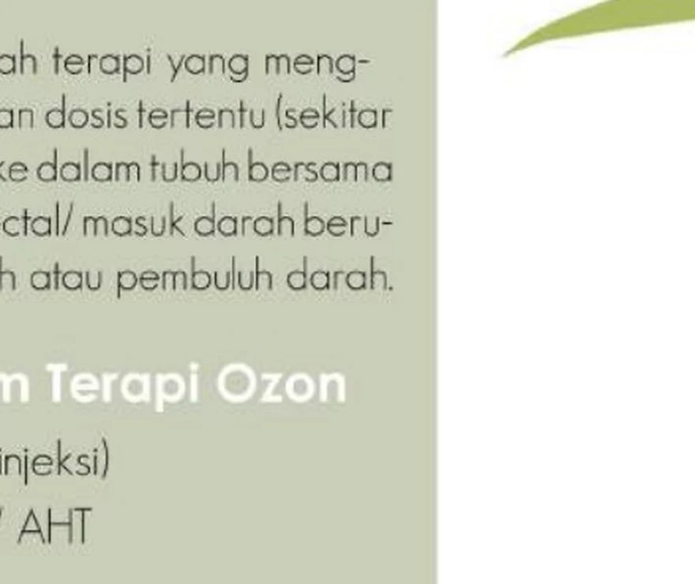
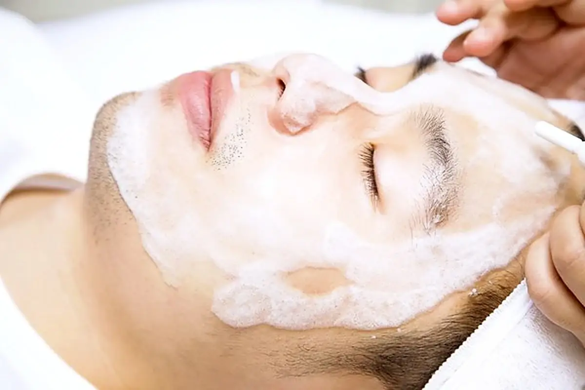

Unit Terapi Komplementer
Medical Ozone
Therapy.
Ozone (O₃) medis dialirkan ke tubuh bersama oksigen, melalui kulit, otot atau darah, untuk: mengatasi inflamasi, nyeri, virus, bakteri, candida, dan parasit.
Konsentrasi terapeutik O₃
0,05% – 0,5%
Jendela kerja
Pendekatan Q‑Life
Hanya dengan satu modalitas alami, mempercepat pemulihan dan kesembuhan.
Terapi Ozone medis memanfaatkan sifat oksidatif Ozone yang terkontrol untuk merangsang penyembuhan, meningkatkan oksigenasi jaringan, dan membantu detoksifikasi.
Jalur pemberian dipilih agar sesuai dengan kondisi dan tujuan perawatan.
Medical Ozone Therapy adalah terapi komplementer mendampingi, bukan menggantikan, pemeriksaan dan pengobatan medis yang sedang Anda jalani.
Sembilan jalur pemberian
Satu terapi, Sembilan rute berbeda.





Memahami pendekatan
Cara kerja di dalam tubuh.
Pada dosis dan metode yang tepat, Ozone memicu respons adaptif: memperbaiki oksigenasi jaringan, mengaktifkan enzim antioksidan, dan menekan mikroba: sehingga pemulihan berlangsung lebih efisien.
Oksigenasi jaringan
Ozone meningkatkan pelepasan oksigen ke jaringan, mendukung metabolisme sel yang lebih baik.
Aktivasi antioksidan
Stres oksidatif ringan yang terkontrol mengaktifkan sistem enzim antioksidan tubuh.
Menekan mikroba
Sifat oksidatif Ozone membantu menekan bakteri, virus, dan jamur pada lingkungan terapi.
Menetralisir inflamasi dan mengatasi nyeri
Membantu memodulasi respons inflamasi dan meredakan nyeri sesuai kondisi serta evaluasi medis.
Penjelasan umum ini bukan diagnosis atau jaminan hasil individual. Respons setiap pasien berbeda dan dievaluasi secara klinis.
Dokumentasi terapi
Terapi berlangsung dalam pengawasan tim.


Protokol klinis
Rencana perawatan tidak dibuat dari diagnosis sendiri.
Metode, dosis, dan kesesuaian terapi ditentukan setelah konsultasi dan evaluasi oleh tim medis. Alur berikut menjaga terapi tetap aman dan sesuai kondisi Anda.
- Anamnesa awalRiwayat kondisi dan tujuan perawatan dibahas terlebih dahulu bersama dokter.
- Metode terpilihRute pemberian dan dosis disesuaikan dengan pertimbangan medis.
- PemantauanRespons dan kenyamanan pasien diperhatikan selama dan setelah terapi.
Ruang lingkup informasi
Pentingnya berdiskusi dengan dokter.
- Kolesterol tinggi / Dislipidemia
- Jantung & pembuluh darah (hipertensi, jantung koroner, stroke)
- Diabetes mellitus & komplikasi (gangren, gagal ginjal)
- Kanker & efek samping kemoterapi / radiasi
- Kista indung telur
- Kista / tumor payudara
- Kegemukan
- Alergi
- Sesak nafas / Asma / COPD
- Rematik
- Hepatitis / penyakit karena virus
- Migrain, sakit kepala
- Vertigo
- Insomnia
- Autoimmune disease
- Anti-aging / anti penuaan


Mulai dari konsultasi
Bahas kondisi Anda dengan tim medis Q-Life.
Konsultasikan kondisi dan tujuan perawatan Anda untuk menentukan urutan terapi yang tepat.